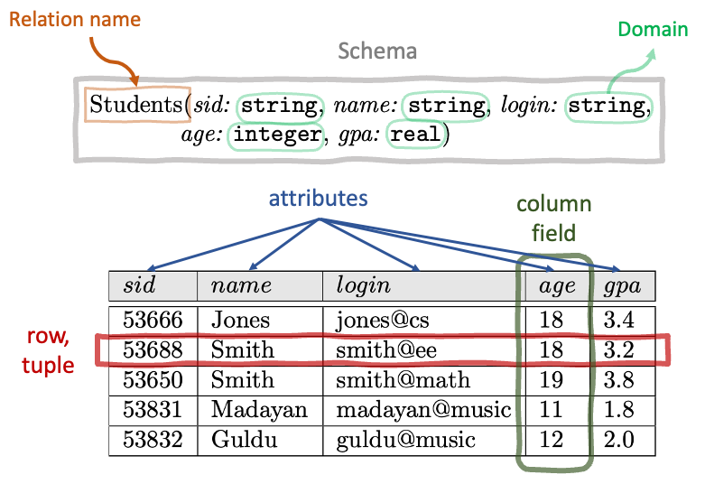

Primary Key
- A candidate key that is chosen to be the main identifier of a table
- Automaticaly unique and not null
- Must be unique and not null
- Must be minimal
- generally the candidate key with the fewest columns
DATABASE != DBMS

| Command | Usage |
|---|---|
\l |
List all databases |
\c |
Connect to a database |
\d |
Describe tables and views |
\dt |
List tables |
\dt+ |
List tables with additional info |
\d+ |
List tables and views with additional info |
\! |
Execute shell commands |
\cd |
Change directory |
\i |
Execute commands from a file |
\h |
View help on SQL commands |
\? |
View help on psql meta commands |
\q |
Quit interactive shell |
pip install ipython-sql%load_ext sql# Login to database
import json
import urllib.parse
# use credentials.json to login (not included in repo)
with open('data/credentials.json') as f:
login = json.load(f)
username = login['user']
password = urllib.parse.quote(login['password'])
host = login['host']
port = login['port']%sql postgresql://{username}:{password}@{host}:{port}/worldor
%%sql output << # Not a pandas dataframe
SELECT
name, population
FROM
country
;
# convert to pandas dataframe
df = output.DataFrame()| Command | Description / Example |
|---|---|
SELECT c1, c2FROM t; |
Query data in columns c1, c2 from a table |
SELECT *FROM t; |
Query all rows and columns from a table |
SELECT c1, c2FROM tWHERE condition; |
Query data and filter rows with a condition |
SELECT DISTINCT c1FROM tWHERE condition; |
Query distinct rows from a table |
SELECT COUNT(DISTINCT (c1, c2))FROM t; |
Count distinct rows in a table |
SELECT c1, c2FROM tORDER BY c1 ASC [DESC]; |
Sort the result set in ascending or descending order |
SELECT c1, c2FROM tORDER BY c1LIMIT n OFFSET offset; |
Skip offset of rows and return the next n rows |
SELECT c1, aggregate(c2)FROM tGROUP BY c1; |
Group rows using an aggregate function |
SELECT c1, aggregate(c2)FROM tGROUP BY c1HAVING condition; |
Filter groups using HAVING clause |
SELECT CONCAT(c1, c2)FROM t; |
Concatenate two or more strings |
Notes:
=, >=, <=, IN ('a','b'), IS NULL, …'...'AVG, COUNT, MAX, MIN, SUM, ROUND(value, decimal_places)| Command | Description / Example |
|---|---|
SELECT c1, c2FROM t1INNER JOIN t2 ON condition; |
Inner join t1 and t2 |
SELECT c1, c2FROM t1LEFT JOIN t2 ON condition; |
Left join t1 and t2 |
SELECT c1, c2FROM t1RIGHT JOIN t2 ON condition; |
Right join t1 and t2 |
SELECT c1, c2FROM t1FULL OUTER JOIN t2 ON condition; |
Perform full outer join |
SELECT c1, c2FROM t1CROSS JOIN t2; |
Produce a Cartesian product of rows in tables |
SELECT c1, c2FROM t1 AINNER JOIN t2 B ON condition; |
Join t1 to itself using INNER JOIN clause |
| Command | Description / Example |
|---|---|
SELECT c1, c2FROM t1UNION [ALL]SELECT c1, c2 FROM t2; |
Combine rows from two queries |
SELECT c1, c2FROM t1INTERSECTSELECT c1, c2 FROM t2; |
Return the intersection of two queries |
SELECT c1, c2FROM t1MINUSSELECT c1, c2 FROM t2; |
Subtract a result set from another result set |
SELECT c1, c2FROM tWHERE c1 [NOT] LIKE pattern; |
Query rows using pattern matching % _ |
SELECT c1, c2FROM tWHERE c1 [NOT] IN value_list; |
Query rows in a list |
SELECT c1, c2FROM tWHERE c1 BETWEEN low AND high; |
Query rows between two values |
SELECT c1, c2FROM tWHERE c1 IS [NOT] NULL; |
Check if values in a table is NULL or not |
| Command | Description / Example |
|---|---|
CREATE TABLE t (id INT PRIMARY KEY,name VARCHAR NOT NULL,price INT DEFAULT 0); |
Create a new table with three columns |
DROP TABLE t; |
Delete the table from the database |
ALTER TABLE t ADD column; |
Add a new column to the table |
ALTER TABLE t DROP COLUMN c; |
Drop column c from the |
PostgreSQL supports many data types. The most common ones are:
BOOLEAN or BOOL
TRUE, t, true, y, yes, on, 1CHAR(n): string of n characters (pad with spaces)VARCHAR(n): string of up to n charactersTEXT: PostgreSQL-specific type for storing strings of any lengthDATE: date (YYYY-MM-DD)
CURRENT_DATE: current dateTIME: timeTIMESTAMP: date and timeTIMESTAMPTZ: date and time with timezone" is used for identifiers (e.g. table names, column names)' is used for strings.| Name | Storage Size | Description | Range |
|---|---|---|---|
smallint |
2 bytes | small-range integer | -32,768 to +32,767 |
integer |
4 bytes | typical choice for integer | -2,147,483,648 to +2,147,483,647 |
bigint |
8 bytes | large-range integer | -9,223,372,036,854,775,808 to +9,223,372,036,854,775,807 |
serial |
4 bytes | auto-incrementing integer | 1 to 2,147,483,647 |
bigserial |
8 bytes | large auto-incrementing integer | 1 to 9,223,372,036,854,775,807 |
Note: serial and bigserial are not true types, but merely a notational convenience for creating unique identifier columns.
Floating-Point Numbers
| Name | Storage Size | Description | Range |
|---|---|---|---|
real |
4 bytes | variable-precision, inexact | at least 6 decimal digits (implementation dependent) |
double precision |
8 bytes | variable-precision, inexact | at least 15 decimal digits (implementation dependent) |
Arbitrary Precision Numbers
| Name | Storage Size | Description | Range |
|---|---|---|---|
numeric or decimal |
variable | user-specified precision, exact | 131072 digits before and 16383 digits after the decimal point |
Note: numeric and decimal are the same type in Postgres.
<col>::<data_type> or CAST(<col> AS <data_type>)SELECT '123'::integer;SELECT CAST('123' AS integer);WHERE| Condition Example | Description |
|---|---|
WHERE column = value |
Equals; returns true if the column equals the value. |
WHERE column <> value |
Not equals; true if the column is not equal to value. |
WHERE column > value |
Greater than; true if the column is more than value. |
WHERE column < value |
Less than; true if the column is less than value. |
WHERE column BETWEEN value1 AND value2 |
True if the column is within the range of value1 and value2. |
WHERE column [NOT] IN (value1, value2, ...) |
True if the column is equal to any of multiple values. |
WHERE column [NOT] LIKE pattern |
True if the column matches the SQL pattern. |
WHERE column IS [NOT] NULL |
True if the column is NULL. |
LIKELIKE is case-sensitiveILIKE is case-insensitive% (any string of zero or more characters)_ (any single character)WHERE column LIKE 'abc%'Other nuances:
ESCAPE to identify escape character
WHERE column LIKE '%$%%' ESCAPE '$': matches strings that contains %ASWHERE clause because order of execution is FROM then WHEREFROM and JOINWHEREGROUP BY, then HAVINGSELECT , then DISTINCTORDER BYLIMIT and OFFSET| Short Description | Example/Syntax |
|---|---|
| Addition | col1 + col2 |
| Subtraction | col1 - col2 |
| Multiplication | col1 * col2 |
| Division | col1 / col2 |
| Modulus | col1 % col2 |
| Absolute Value | ABS(col) |
| Round to n decimal places | ROUND(col, n) |
| Round up | CEILING(col) |
| Round down | FLOOR(col) |
| Power of n | POWER(col, n) |
| Square Root | SQRT(col) |
| Truncate to n decimal places | TRUNCATE(col, n) |
| Generate random number | RAND() |
| Short Description | Example/Syntax |
|---|---|
| Concatenate strings | CONCAT(str1, str2, ...) or str1 \|\| str2 |
| Length of string | CHAR_LENGTH(str) |
| Convert to lower case | LOWER(str) |
| Convert to upper case | UPPER(str) |
| Extract substring | SUBSTRING(str, start, length) |
| Trim spaces | TRIM(str) |
| Replace substring | REPLACE(str, from_str, to_str) |
| Position of substring | POSITION(substring IN str) |
| Short Description | Example/Syntax |
|---|---|
| Current date | CURRENT_DATE |
| Current time | CURRENT_TIME |
| Current date and time | CURRENT_TIMESTAMP |
| Extract part of date/time | EXTRACT(part FROM date/time) |
| Add interval to date/time | date/time + INTERVAL |
| Subtract interval from date/time | date/time - INTERVAL |
| Difference between dates/times | DATEDIFF(date1, date2) |
| Format date/time | FORMAT(date/time, format) |
e.g. SELECT EXTRACT(YEAR FROM CURRENT_DATE);
| Short Description | Example/Syntax |
|---|---|
| Check for NULL | col IS NULL |
| Check for non-NULL | col IS NOT NULL |
| Replace NULL with specified value | COALESCE(col, replace_value) |
| Null-safe equal to operator | col1 <=> col2 |
| Case statement with NULL handling | CASE WHEN col IS NULL THEN result ELSE other_result END |
| Null if expression is NULL | NULLIF(expression, NULL) |
| Function | Description |
|---|---|
AVG() |
Returns the average value. |
COUNT() |
Returns the number of rows. |
MAX() |
Returns the maximum value. |
MIN() |
Returns the minimum value. |
SUM() |
Returns the sum of all or distinct values. |
VAR() |
Returns the variance of all or distinct values. |
STDDEV |
Returns the standard deviation of all or distinct values. |
Important notes:
SELECT clause) without GROUP BY clauseNULL values except COUNT(*)WHERE clause because order of execution is FROM then WHEREGROUP BY clause is used to group rows with the same valuesJOIN clause is used to combine rows from two or more tables based on a related column between them
INNER JOINSELECT -- columns from both tables
t1.column1, t2.column2
FROM
table1 AS t1 -- after using alias, use alias instead of table name
jointype
table2 AS t2
ON -- condition to join tables
t1.column = t2.column| Join Type | Description |
|---|---|
CROSS |
Returns the Cartesian product of the sets of rows from the joined tables (all possible combinations) |
INNER |
Returns rows when there is a match in both tables. (intersect) |
NATURAL |
Returns all rows without specifying ON, names have to be the same in both tables. |
LEFT OUTER |
Returns all rows from the left-hand table, plus any rows in the right-hand table that match the left-hand side. |
RIGHT OUTER |
Returns all rows from the right-hand table, plus any rows in the left-hand table that match the right-hand side. |
FULL OUTER |
Returns all rows from both tables, with nulls in place of those rows that have no match in the other table. |
column position:
INSERT INTO table_name
VALUES
(value1, value2, ...),
(value1, value2, ...), -- can insert multiple rows at once
...column name:
from another table:
WHERE clauseDELETE because it doesn’t scan every row
CREATE TABLE table_name (
column1 datatype [constraint] PRIMARY KEY, -- for simple primary key
column2 datatype UNIQUE, -- unique constraint
column3 TEXT DEFAULT 'default value', -- default value
column4 datatype
[CONSTRAINT constraint_name] CHECK (condition), -- check constraint
-- e.g.
name TEXT NOT NULL,
phone CHAR(12) CHECK (phone LIKE '___-___-____')
...
-- table constraints
-- if set composite primary key, also can simple
[CONSTRAINT constraint_name] PRIMARY KEY (column1, column2, ...),
);id and email)-- parent table
CREATE TABLE instructor (
id INTEGER PRIMARY KEY,
name TEXT NOT NULL,
email TEXT UNIQUE,
);
-- child table
CREATE TABLE instructor_course (
id INTEGER,
course_id TEXT,
PRIMARY KEY (id, course_id), -- composite primary key
FOREIGN KEY (id) REFERENCES instructor (id)
ON DELETE CASCADE,
-- can also specify column name
FOREIGN KEY (course_id) REFERENCES instructor (id)
ON DELETE CASCADE -- delete child rows when parent row is deleted
ON UPDATE CASCADE -- update child rows when child row is updated
);| Referential Action | Description |
|---|---|
NO ACTION |
Default. Rejects update or delete of parent row |
SET NULL |
Sets foreign key to null |
CASCADE |
Deletes or updates child rows when parent row is deleted or updated |
SET DEFAULT |
Sets foreign key to default value |
CASCADE to drop the table and all its foreign key constraints[{BEGIN|START} [TRANSACTION]]; -- BEGIN more common, can just start with `BEGIN`
<SQL statements>
{COMMIT|ROLLBACK};COMMIT: make all changes made by the transaction permanent
ROLLBACK: undo all changes made by the transactionProperties of a transaction:
-- Selects countries with a population greater than the average population of all countries
SELECT
name
FROM
country
WHERE
surfacearea > (
SELECT AVG(surfacearea) FROM country
)
;ANY and ALL are used to compare a value to a list or subquery| ANY | ALL |
|---|---|
| if one of values true => true | if all values true => true |
e.g.
-- Find the names of all countries that have a
-- population greater than all European countries.
SELECT
name
FROM
country
WHERE
continent <> 'Europe'
AND
population > ALL (
SELECT
population
FROM
country
WHERE
continent = 'Europe'
)
;EXISTS is used to check if a subquery returns any rows
IN because it stops as soon as it finds a matchSELECT query
| Feature | Temporary Tables | Views | Materialized Views | CTEs |
|---|---|---|---|---|
| Nature | Physical table, session-scoped | Virtual table | Physical storage of query results | Temporary result set |
| Data Storage | Stores data temporarily | Does not store data, only stores the query itself | Stores results of a query | Does not store data, used within query execution |
| Scope | Exists only during a database session | Permanent, unless dropped | Permanent, unless dropped | Exists only during the execution of a query |
| Access | Can only be accessed by 1 user | Can be accessed by multiple users | Can be accessed by multiple users | Can be accessed by multiple users |
| Usage | Intermediate data storage, complex queries | Simplifying access to complex queries, data security | Performance improvement for complex queries | Breaking down complex queries, recursive queries can manipulate default processing order of SQL clauses |
| Performance | Dependent on data size and indexes | Executes underlying query each time | Faster access, as data is pre-calculated | Dependent on the complexity of the query |
| Updates | Data persists for the session, can be updated | Reflects real-time data from base tables | Requires refresh to update data | Not applicable (recomputed with each query execution) |
| Indexing | Can have indexes | Cannot have indexes | Can have indexes | Not applicable |
SELECT and ORDER BY clausesWHERE, GROUP BY, and HAVINGSELECT and ORDER BYSELECT
column,
window_function_name(expression) OVER (
PARTITION BY column
ORDER BY column
frame_clause
)
-- e.g.
continent,
MAX(population)
OVER (PARTITION BY continent)
FROM
table
;AVG, COUNT, MAX, MIN, SUMCUME_DIST(): returns the cumulative distribution, i.e. the percentage of values less than or equal to the current value.NTILE(): given a specified number of buckets, it tells us in which bucket each row goes among other rows in the partition.PERCENT_RANK(): similar to CUME_DIST(), but considers only the percentage of values less than (and not equal to) the current value.DENSE_RANK(): returns the rank of a row within a partition without jumps after duplicate ranks (e.g. 1, 2, 2, 3, …)RANK(): returns the rank of row within a partition but with jumps after duplicates ranks (e.g. 1, 2, 2, 4, …)ROW_NUMBER(): returns simply the number of a row in a partition, regardless of duplicate values| Elements | Relational | Non-relational |
|---|---|---|
| Data Model | tables | key-value pairs, documents, graphs, etc. |
| Schema | fixed (updates are complicated and time-consuming) | dynamic (schema-free) |
| Querying | semi standard (SQL) | proprietary |
| Performance | strong data consistency and integrity | faster performance for specific usecases |
| Efficiency | write times and table locks reduce efficiency | faster read and write times |
| Scalability | vertical scaling | horizontal scaling |
| Development | require more effort | easier to develop and require fewer resources |
| Principles | ACID (Atomicity, Consistency, Isolation, Durability) | BASE (Basically Available, Soft state, Eventual consistency) |
client.get_database_names()client[db_name].get_collection_names()client[db_name][collection_name].find_one() or client[db_name][collection_name].find()findclient[db_name][collection_name].find()
list(client[db_name][collection_name].find()) returns a list of documentsnext(client[db_name][collection_name].find()) returns the next documentclient = MongoClient()
client[db_name][collection_name].find(
filter={...},
projection={...},
sort=[...],
skip=...,
limit=...,
)filterfilter is a dictionaryfilter = {"key": "value"} returns all documents where key is value| Operator | symbol | notes |
|---|---|---|
$eq or $neq |
= or ~= |
|
$gt or $gte |
> or >= |
|
$lt or $lte |
< or <= |
|
$ne |
!= |
|
$in |
in |
if any of the values in the list matches the value of the key, the document is returned |
$nin |
not in |
|
$all |
all |
all values in the list must match the value of the keys |
$exists |
exists |
|
$regex |
regex |
Also can use $not to negate the operator
using $or, $nor and $and:
projectionprojection is a dictionaryprojection = {"key_1": 1, "key_2": 0} returns all documents with only key_1 and without key_2sortsort is a list of tuples
sort = [("key_1", 1), ("key_2", -1)] sorts by key_1 in ascending order and then by key_2 in descending orderlimitlimit is an integerlimit = 10 returns the first 10 documentsskipskip is an integerskip = 10 skips the first 10 documentscount_documentscount_documents is a methodclient[db_name][collection_name].count_documents(filter={...}) returns the number of documents that match the filterdistinctdistinct is a methodclient[db_name][collection_name].distinct("key_1") returns a list of distinct values for key_1